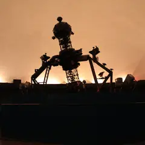
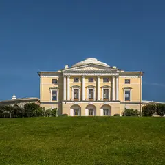
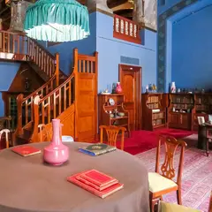

Подборку собрали 11 ноября, прошедшие события скрыты. Свежая афиша — на главной
Подборка · данные на 11 ноября
Куда сходить на свидание в Петербурге
Здесь 69 планов для двоих: прогулка, музей или шоу, а рядом — где поужинать, обычно не дальше 20 минут пешком. 27 планов укладываются примерно в 1 500 ₽ на человека, 25 мы отметили как удачные для первого свидания. Ещё 35 событий на ближайшие две недели — концерты, спектакли и выставки, куда удобно сходить вдвоём. Понравился план — нажми «Позвать сюда»: соберётся приглашение-игра, а ответ с днём и временем вернётся к тебе.
- 69 планов
- 121 место
- 35 событий
Готовые планы для свидания 24 из 69
- Музей «Аптека доктора Пеля» · Историческая аптека-музей · м. Василеостровская
- 24 минуты пешкомСтанция метро «Горный институт» · Новая станция метро
Склянки и шкафы старой аптеки на 7-й линии, потом новая станция «Горный институт» со светильниками-кристаллами.
Открыть план: Аптека Пеля и станция-кристаллПозвать сюда: Аптека Пеля и станция-кристалл
Фото: Florstein, CC BY-SA 4.0 · Wikimedia Commons
- Masters Bookstore · Книжный об искусстве и дизайне · м. Чкаловская
- 23 минуты пешкомКаменный остров · Остров дач и особняков
Альбомы и кофе в Masters на Барочной, потом тихие аллеи и деревянные дачи Каменного острова.
Открыть план: Книжный об искусстве и Каменный островПозвать сюда: Книжный об искусстве и Каменный остров
Фото: Alexey Komarov, CC BY 3.0 · Wikimedia Commons
- Дом Лидваля · Доходный дом, северный модерн · м. Горьковская
- 19 минут пешкомДом с башнями · Доходный дом-«замок»
- 10 минут пешкомМузей петербургского авангарда (Дом Матюшина) · Дом-музей
Совы и пауки дома Лидваля, замок с башнями на площади Толстого и деревянный дом Матюшина среди камня.
Открыть план: Модерн ПетроградкиПозвать сюда: Модерн Петроградки
Фото: Wolfgang Moroder, CC BY-SA 3.0 · Wikimedia Commons
- Парадная с ротондой (дом Яковлева) · Парадная с ротондой · м. Сенная площадь
- 9 минут пешкомДом Флоу · Кофейня в особняке модерн
Круглая лестница с колоннами до купола, потом кофе на пяти этажах особняка с оранжереей на Садовой.
Открыть план: Ротонда на Гороховой и кофе в доме модернПозвать сюда: Ротонда на Гороховой и кофе в доме модерн
Фото: Artyom Svetlov, CC BY-SA 4.0 · Wikimedia Commons
- Проходные дворы Толстовского дома · Проходные дворы, северный модерн · м. Достоевская
- 4 минуты пешкомДом-коммуна «Слеза социализма» · Дом-коммуна, конструктивизм
- 3 минуты пешкомАрхитектор · Коктейльный бар без вывески
Арки Толстовского дома, конструктивистская «Слеза социализма» и коктейль в «Архитекторе», который легко пройти мимо.
Открыть план: Рубинштейна: дворы Лидваля и бар без вывескиПозвать сюда: Рубинштейна: дворы Лидваля и бар без вывески
Фото: angelius1979, CC BY-SA 3.0 · Wikimedia Commons
- Café Alto · Кафе-кофейня · м. Гостиный двор
- 4 минуты пешкомМузей-фотосалон Карла Буллы · Старинное фотоателье
Кофе среди винтажной мебели в Café Alto, потом старинное фотоателье Буллы, где можно сняться в декорациях.
Открыть план: Фотоателье Буллы и кофе на КараваннойПозвать сюда: Фотоателье Буллы и кофе на Караванной
Фото: Karl Bulla, общественное достояние · Wikimedia Commons
- Музей Анны Ахматовой в Фонтанном доме · Музей · м. Маяковская
- 6 минут пешкомSalone Pasta&Bar · Итальянский ресторан
Квартира Ахматовой во флигеле Фонтанного дома и тихий сад за ним, а потом 6 минут пешком вдоль Фонтанки — свежая паста без лишней торжественности.
Открыть план: Ахматова и паста на ФонтанкеПозвать сюда: Ахматова и паста на Фонтанке
Фото: MilanSPb, CC BY-SA 4.0 · Wikimedia Commons
- Музей Набокова · Музей · м. Адмиралтейская
- 1 минута пешкомTeplo · Кафе
Коллекция бабочек в родовом особняке писателя на Большой Морской, а через дорогу — кафе-квартира с диванами и пледами.
Открыть план: Бабочки Набокова и кафе-квартираПозвать сюда: Бабочки Набокова и кафе-квартира
Фото: Vadim Zhivotovsky, CC BY 3.0 · Wikimedia Commons
- Мариинский театр — историческая сцена · Театр оперы и балета · м. Садовая
- 10 минут пешкомKuznya House · Ресторан
Бирюзово-золотой зал и «Жизель» — главный повод нарядиться, а после спектакля 10 минут пешком до Новой Голландии на поздний ужин в старой кузнице.
Открыть план: Балет в Мариинском и ужин на островеПозвать сюда: Балет в Мариинском и ужин на острове
Фото: Jaimrsilva, CC BY-SA 4.0 · Wikimedia Commons
- Кинотеатр «Аврора» · Кинотеатр · м. Гостиный двор
- 2 минуты пешкомProstovino · Винный бар
Фильм в старейшем кинотеатре города, а через пара минут пешком — винный бар с доступными бокалами и простыми закусками.
Открыть план: Бархатный зал «Авроры» и бокал винаПозвать сюда: Бархатный зал «Авроры» и бокал вина
Фото: GAlexandrova, CC BY-SA 4.0 · Wikimedia Commons
- Ботанический сад Петра Великого · Сад · м. Петроградская
- 15 минут пешкомLavraki bistro · Рыбный ресторан
Японский сад и оранжереи с тропиками старейшего ботсада страны, а потом 15 минут пешком — средиземноморский рыбный ресторан с видом на Большую Невку.
Открыть план: Ботанический сад и рыба у НевкиПозвать сюда: Ботанический сад и рыба у Невки
Фото: Afanasovich, CC BY 4.0 · Wikimedia Commons
- Манеж · Выставочный зал · м. Адмиралтейская
- 4 минуты пешкомTeplo · Кафе
Самая громкая выставка сезона в огромном зале у Исаакия, а потом 4 минуты пешком — уютное кафе с пледами, чтобы согреться и обсудить увиденное.
Открыть план: Выставка в Манеже и пледы в TeploПозвать сюда: Выставка в Манеже и пледы в Teplo
Фото: SERGiK73, CC BY-SA 3.0 · Wikimedia Commons
- Юсуповский дворец · Музей · м. Садовая
- 4 минуты пешкомЕМ · Ресторан
Домашний театр князей и подвальные комнаты, где убили Распутина, а потом 4 минуты пешком по Мойке — ужин из многих перемен в «ЕМ».
Открыть план: Дворец Юсуповых и ужин-сет на МойкеПозвать сюда: Дворец Юсуповых и ужин-сет на Мойке
Фото: Jim Gateley, CC BY 3.0 · Wikimedia Commons

- Санкт-Петербургский планетарий · Планетарий · м. Горьковская
- 8 минут пешкомЗайцы · Ресторан
Программа под куполом классического планетария, а потом 8 минут пешком — новый авторский ресторан на Петроградке, сразу попавший в финал городской премии.
Открыть план: Звёзды у Горьковской и ужин в «Зайцах»Позвать сюда: Звёзды у Горьковской и ужин в «Зайцах»
Фото: NGC 7070, CC BY-SA 3.0 · Wikimedia Commons
- Главный штаб Эрмитажа · Музей · м. Адмиралтейская
- 4 минуты пешкомЛитературное кафе · Ресторан
Матисс и Пикассо в светлых анфиладах Главного штаба, а через 4 минуты пешком — ужин в кафе с интерьерами XIX века, откуда Пушкин уехал на дуэль.
Открыть план: Импрессионисты и Литературное кафеПозвать сюда: Импрессионисты и Литературное кафе
Фото: Max A. Khlopov, CC BY-SA 3.0 · Wikimedia Commons
- Государственная академическая Капелла · Концертный зал · м. Адмиралтейская
- 2 минуты пешкомBellevue · Ресторан
Хор или симфония в старинном зале с идеальной акустикой у Певческого моста, а через пару минут пешком — ужин над крышами у Дворцовой.
Открыть план: Капелла и ужин с видом на ДворцовуюПозвать сюда: Капелла и ужин с видом на Дворцовую
Фото: GAlexandrova, CC BY-SA 4.0 · Wikimedia Commons
- Музей-квартира Пушкина · Музей · м. Адмиралтейская
- 3 минуты пешкомЧАО Какао · Какаочная
Кабинет и библиотека поэта у Конюшенной, а потом пара минут пешком — какаочная, где наливают густой горячий шоколад из окошка.
Открыть план: Квартира Пушкина и горячий шоколадПозвать сюда: Квартира Пушкина и горячий шоколад
Фото: Alexander Ardatov, CC BY 3.0 · Wikimedia Commons
- Все свободны · Книжный магазин · м. Чернышевская
- 4 минуты пешкомGiallo Bistro · Итальянское бистро
Полистайте книги на мансарде уютного независимого книжного, а потом 4 минуты пешком — камерное итальянское бистро, которое часто советуют для первого свидания.
Открыть план: Книжный на Некрасова и итальянское бистроПозвать сюда: Книжный на Некрасова и итальянское бистро
Фото: ELindas, CC BY-SA 4.0 · Wikimedia Commons
- Колоннада Исаакиевского собора · Смотровая площадка · м. Адмиралтейская
- 3 минуты пешкомМансарда · Ресторан
Поднимитесь на колоннаду к закату — весь центр и Нева на все стороны, — а потом ужин в «Мансарде», где купол Исаакия смотрит прямо в огромные окна.
Открыть план: Колоннада Исаакия и ужин под куполомПозвать сюда: Колоннада Исаакия и ужин под куполом
Фото: Vadim Indeikin, CC BY-SA 3.0 · Wikimedia Commons
- Яани Кирик · Концертный зал · м. Горный институт
- 10 минут пешкомOggi bistro · Итальянское бистро
Классика при свечах в эстонской церкви в Коломне, а потом 10 минут пешком — паста и тирамису во дворе «Бутылки» на Новой Голландии.
Открыть план: Концерт при свечах и итальянское бистроПозвать сюда: Концерт при свечах и итальянское бистро
Фото: Vasagavavv, CC0 · Wikimedia Commons
- Кронштадт: Якорная площадь и Морской собор · Прогулочный район · м. Беговая
- дальше на метро или таксиОстров фортов · Парк
Морской собор и тихие улицы города-крепости, а потом — Остров фортов: маяк, аллея флота и форты на горизонте. Между точками — на автобусе или такси.
Открыть план: Кронштадт: собор и фортыПозвать сюда: Кронштадт: собор и форты
Фото: Валера37526, CC BY-SA 4.0 · Wikimedia Commons
- Музей-квартира Куинджи · Музей · м. Спортивная
- 6 минут пешкомБиография · Кофейня
Квартира художника с видом на Неву и выход на крышу его мастерской, а потом 6 минут пешком — кофейня, где любят эксперименты с фильтром.
Открыть план: Крыша Куинджи и кофе на ВасильевскомПозвать сюда: Крыша Куинджи и кофе на Васильевском
Фото: Andris Malygin, CC BY 3.0 · Wikimedia Commons
- Кунсткамера · Музей · м. Адмиралтейская
- 3 минуты пешкомЗоологический музей · Музей
- 12 минут пешкомProbka · Ресторан
Петровские диковины в первом музее России, потом скелеты китов и мамонтёнок в соседнем Зоологическом, а ужинать — через мост, в Probka.
Открыть план: Кунсткамера, киты и пастаПозвать сюда: Кунсткамера, киты и паста
Фото: Никонико962, CC BY-SA 4.0 · Wikimedia Commons
- Планетарий №1 · Планетарий · м. Технологический институт
- 15 минут пешкомКусацу · Японское бистро
Звёздная программа под одним из крупнейших куполов мира в старом газгольдере, а потом 15 минут пешком — крошечное японское бистро с кацу-сандо и матчей.
Открыть план: Купол в газгольдере и матча-бистроПозвать сюда: Купол в газгольдере и матча-бистро
Фото: Никонико962, CC BY-SA 4.0 · Wikimedia Commons


Места, куда зовут на свидание 18 из 121
наб. реки Фонтанки, 30
Новое
Свежая паста и бар на Фонтанке — лёгкий итальянский ужин вдвоём без лишней торжественности.
Подробнее и маршрут: Salone Pasta&BarПозвать сюда: Salone Pasta&Bar
Фото здания: GAlexandrova, CC BY-SA 4.0 · Wikimedia Commons
наб. реки Мойки, 22
Новое
Ресторан на верхнем этаже отеля у Дворцовой: панорама крыш и соборов, сезонная кухня.
Подробнее и маршрут: BellevueПозвать сюда: Bellevue
Фото: Moneycantbuy, CC BY-SA 4.0 · Wikimedia Commons
ул. Профессора Попова, 2П
Новое
Старейший ботанический сад страны: дендрарий, японский сад и оранжереи с тропиками; осенью сюда приходят любоваться клёнами.
Подробнее и маршрут: Ботанический сад Петра ВеликогоПозвать сюда: Ботанический сад Петра Великого
Фото: Afanasovich, CC BY 4.0 · Wikimedia Commons
Шпалерная ул., 26
Новое
Интерактивный музей, где гиды общаются жестами, а гости — без слов; есть формат «свидания в тишине» с мастер-классом.
Подробнее и маршрут: В тишинеПозвать сюда: В тишине
Фото здания: Vityavo, CC BY-SA 4.0 · Wikimedia Commons
ул. Некрасова, 23
Новое
Уютный независимый книжный на Некрасова с кафе и мансардой, где легко засидеться с какао и книгой; есть и полка комиксов.
Подробнее и маршрут: Все свободныПозвать сюда: Все свободны
Фото: ELindas, CC BY-SA 4.0 · Wikimedia Commons
Дворцовая площадь, 6-8
Новое
Импрессионисты, Матисс и Пикассо в светлых анфиладах под стеклянными крышами, плюс большие сменные выставки.
Подробнее и маршрут: Главный штаб ЭрмитажаПозвать сюда: Главный штаб Эрмитажа
Фото: Max A. Khlopov, CC BY-SA 3.0 · Wikimedia Commons
Елагин остров, 4Т
Новое
Остров-парк без машин: пруды, белки, дворец и Стрелка, где провожают солнце над заливом. Осенью — одно из лучших мест города.
Подробнее и маршрут: Елагин островПозвать сюда: Елагин остров
Фото: Александровы АГ, CC BY-SA 4.0 · Wikimedia Commons
Высотная ул., 1
Новое
Панорама города и залива с 83-го этажа самого высокого небоскрёба Европы, а внизу — набережная для прогулки. Билеты разбирают быстро.
Подробнее и маршрут: Лахта Центр: обзорная площадка и набережнаяПозвать сюда: Лахта Центр: обзорная площадка и набережная
Фото: TomPlay148, CC BY-SA 3.0 · Wikimedia Commons
Петергоф, Разводная ул., 2
Новое
Каскады, Самсон и аллеи до самого залива — на Петергоф стоит закладывать целый день. Сезон фонтанов уточняйте перед поездкой.
Подробнее и маршрут: Нижний парк ПетергофаПозвать сюда: Нижний парк Петергофа
Фото: Клеткин, CC BY-SA 3.0 · Wikimedia Commons
наб. Адмиралтейского канала, 2
Новое
Остров с выставками, лекциями, кино и маркетами в старых складах; в любое время года есть программа.
Подробнее и маршрут: Новая ГолландияПозвать сюда: Новая Голландия
Фото: Florstein, CC BY-SA 4.0 · Wikimedia Commons

Павловск, Садовая ул., 20
Новое
Огромный пейзажный парк с долинами, мостиками и колоннадой Аполлона; белки здесь почти ручные — возьмите орешки.
Подробнее и маршрут: Павловский паркПозвать сюда: Павловский парк
Фото: Florstein, CC BY-SA 4.0 · Wikimedia Commons
Приморский пр., 74
Новое
Молодой парк на берегу залива: длинный мол, вид на Лахта Центр и закаты прямо над водой — особенно хорош вечером.
Подробнее и маршрут: Парк 300-летия Санкт-ПетербургаПозвать сюда: Парк 300-летия Санкт-Петербурга
Фото: Germash19, CC BY-SA 4.0 · Wikimedia Commons
ул. Восстания, 31
Новое
Уютная кофейня у Чернышевской с вишнёвым пирогом и вечерними кинопоказами — спокойный вариант для неспешного свидания.
Подробнее и маршрут: ПенкаПозвать сюда: Пенка
Фото здания: Bestalex, CC BY-SA 4.0 · Wikimedia Commons
Кожевенная линия, 40Б
Новое
Бывший кабельный завод на берегу залива: выставки, концерты, фестивали и закаты у воды.
Подробнее и маршрут: Севкабель ПортПозвать сюда: Севкабель Порт
Фото: Priana686, CC BY-SA 4.0 · Wikimedia Commons
Владимирский пр., 12
Новое
Живой репертуарный театр у Владимирской: яркие режиссёрские спектакли и сильная труппа.
Подробнее и маршрут: Театр им. ЛенсоветаПозвать сюда: Театр им. Ленсовета
Фото: Дарья Пичугина, CC BY-SA 2.5 · Wikimedia Commons
Миллионная ул., 25
Новое
Какаочная в двух шагах от Эрмитажа: густой горячий шоколад и авторское какао из окошка — согреться посреди прогулки.
Подробнее и маршрут: ЧАО КакаоПозвать сюда: ЧАО Какао
Фото здания: Александр Сигачёв, CC BY-SA 4.0 · Wikimedia Commons

Пушкин, Дворцовая ул., 2
Новое
Соседний с Екатерининским, но тише: Китайская деревня, пруды и старые аллеи без толп туристов.
Подробнее и маршрут: Александровский парк (Пушкин)Позвать сюда: Александровский парк (Пушкин)
Фото: Никонико962, CC BY-SA 4.0 · Wikimedia Commons
Адмиралтейский пр.
Новое
Сквер у Адмиралтейства с фонтаном и видом на золотой шпиль — удобная передышка между Дворцовой и Исаакием.
Подробнее и маршрут: Александровский садПозвать сюда: Александровский сад
Фото: Alexander77, CC BY-SA 3.0 · Wikimedia Commons


Куда сходить вдвоём в ближайшие две недели 8 из 35
Театр им. Комиссаржевской · м. Гостиный двор · 300–4 000 ₽ · 18+
Булгаковская авантюра времён НЭПа: под вывеской ателье Зоя Пельц копит деньги, чтобы увезти любимого графа в Ниццу. Чёрный юмор, мистика и криминал.
Подробнее: Зойкина квартираПозвать сюда: Зойкина квартираБилеты : Зойкина квартира (страница с билетами, откроется в новой вкладке)
БКЗ «Октябрьский» · м. Площадь Восстания · 3 200–15 000 ₽ · 12+
Шахрин и «Чайф» везут программу к 40-летию Свердловского рок-клуба: хиты плюс редкие песни. Уральский рок в академичном БКЗ — сидячий, но очень душевный вечер.
Подробнее: ЧайфПозвать сюда: ЧайфБилеты : Чайф (страница с билетами, откроется в новой вкладке)
Фото: Florstein, CC BY-SA 4.0 · Wikimedia Commons
Эрмитаж, Главный музейный комплекс · м. Адмиралтейская
Шёлковые придворные халаты, портреты цинских полководцев и воссозданный кабинет китайского учёного в Гербовом зале. Выставка работает до 22 ноября — успейте.
Подробнее: Императорский Китай. Династия Цин (1644–1911)Позвать сюда: Императорский Китай. Династия Цин (1644–1911)Билеты : Императорский Китай. Династия Цин (1644–1911) (страница с билетами, откроется в новой вкладке)
Фото: Teddy fox78, CC BY-SA 3.0 · Wikimedia Commons
Мариинский-2 · м. Садовая · от 2 000 ₽ · 6+
Цикл лекций Ольги Розановой о зарубежных мастерах, работавших на Мариинской сцене. Встречи раз в месяц во втором здании — повод прийти в театр не только на спектакль.
Подробнее: Ольга Розанова. Зарубежные мастера на Мариинской сценеПозвать сюда: Ольга Розанова. Зарубежные мастера на Мариинской сценеБилеты : Ольга Розанова. Зарубежные мастера на Мариинской сцене (страница с билетами, откроется в новой вкладке)
Фото: randreu, CC BY 3.0 · Wikimedia Commons
Иммерсивный театр «Морфеус» · м. Адмиралтейская · 3 000–3 500 ₽ · 18+
Иммерсивная комедия-расследование: после бурного девичника вы просыпаетесь в разгромленном номере, а невеста исчезла. Группа 2–8 человек, сеансы с 13:00 до 21:30.
Подробнее: До свадьбы доживётПозвать сюда: До свадьбы доживётБилеты : До свадьбы доживёт (страница с билетами, откроется в новой вкладке)
РОСФОТО · м. Адмиралтейская · 0+
Нижний Новгород 1896-го на старинных снимках: павильоны большой Всероссийской выставки, электрическая дорога и воздухоплавательный парк. Тихий музей рядом с Исаакием.
Подробнее: Россия 1896. К юбилею Нижегородской промышленной и художественной выставкиПозвать сюда: Россия 1896. К юбилею Нижегородской промышленной и художественной выставкиБилеты : Россия 1896. К юбилею Нижегородской промышленной и художественной выставки (страница с билетами, откроется в новой вкладке)
Капелла · м. Адмиралтейская · 900–1 300 ₽ · 6+
Гитарист Гасан Багиров переводит в джаз мелодии из отечественного кино — Дунаевские, Шостакович, Хренников. Зал Капеллы на Мойке, билеты до 1 300 ₽.
Подробнее: Гасан Багиров. «Джаз на Неве»Позвать сюда: Гасан Багиров. «Джаз на Неве»Билеты : Гасан Багиров. «Джаз на Неве» (страница с билетами, откроется в новой вкладке)
Фото: GAlexandrova, CC BY-SA 4.0 · Wikimedia Commons
Театр музыкальной комедии · м. Гостиный двор · 400–2 850 ₽ · 12+
Оперетта Легара о фиктивном браке, который вдруг становится настоящим: парижский карнавал, богема и вальсы. Главные роли отмечены «Золотыми софитами».
Подробнее: Граф ЛюксембургПозвать сюда: Граф ЛюксембургБилеты : Граф Люксембург (страница с билетами, откроется в новой вкладке)
Фото: Книжная пыль, CC BY-SA 4.0 · Wikimedia Commons


Как позвать
- Выбери план, место или событие — в карточке адрес, цены и маршрут в Яндекс Картах.
- Нажми «Позвать сюда» — соберётся приглашение-игра для свидания или голосование для компании.
- Отправь ссылку в любой мессенджер: тебе ответят, а компания отметит, куда и когда может. Бесплатно и без регистрации.